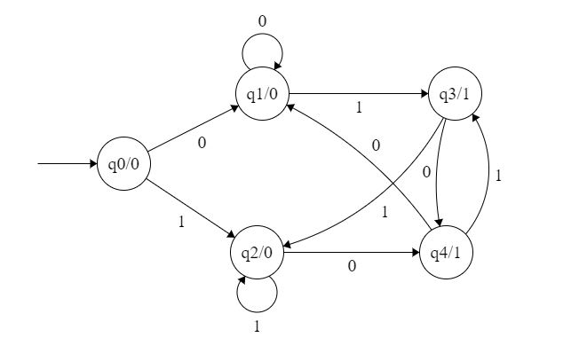
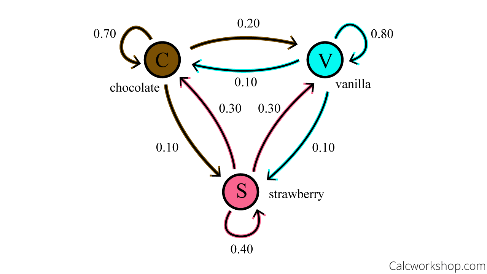
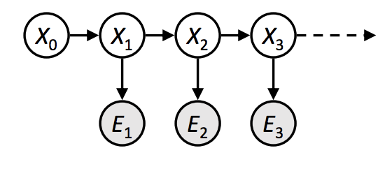
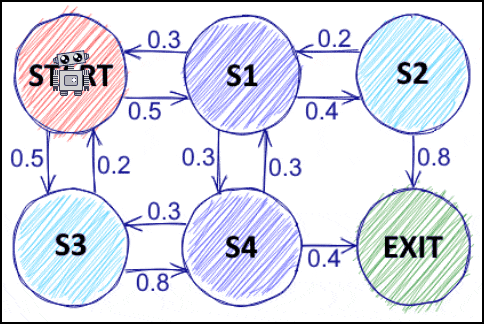
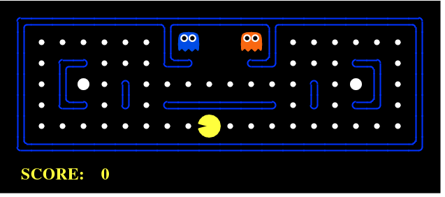
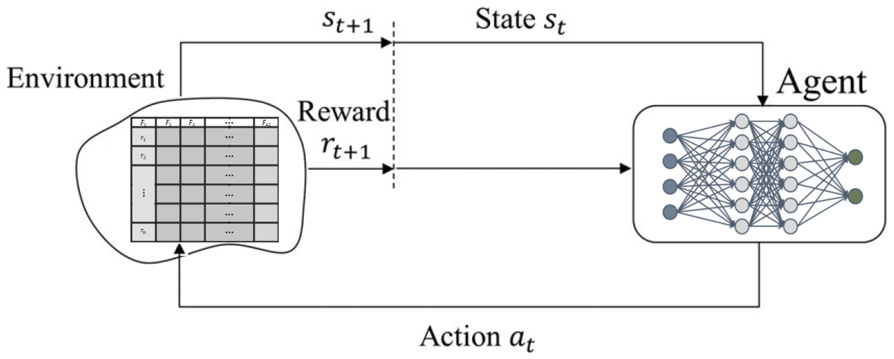
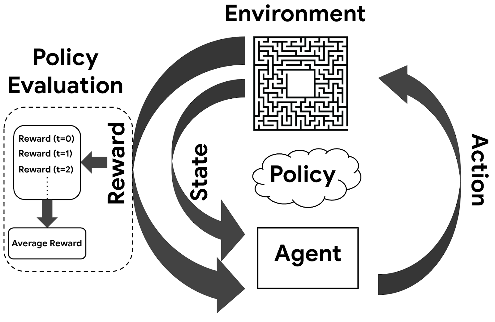
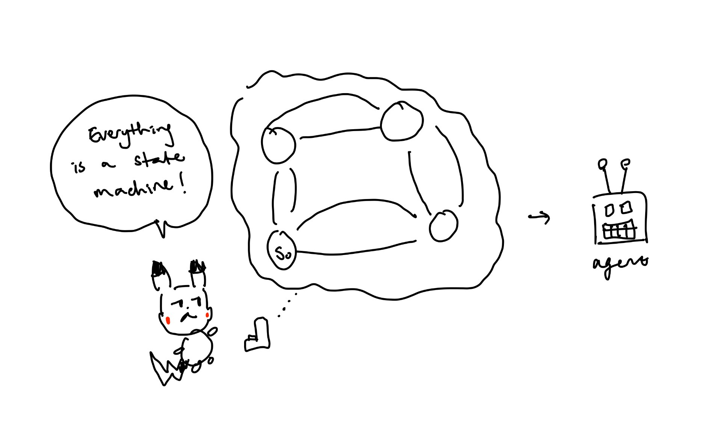

← Home
Probabilistic State Machines for Reinforcement Learning

Primer: Google Pagerank
Recently, Pikachu has been flagged by the FBI.
He was clicking around Google and searching to the best ways to defeat gym leaders.
Obviously, this is cheating.
However, Pikachu claims that it was Google's algorithm that lead him to find these results.
How does it do that?
It uses a Markov Chain!
What can we do with Markov Chains?
Everything is a State Machines
Bold claim huh? I propose that everything is a state machine.
More clearly, everything can be modeled as a state machine.
Your water bottle? The state can transition from you buying it, to you using it, to you throwing it away.
In this case we've created a Finite State Machine (FSM) with 3 states: buy, use, trash.
This concept can be applied broadly.
When building an app, your app transitions between different states depending on what the user clicks or inputs
usually cycling between all states (cyclic).
State Machine
Computational model that uses clearly defined states and defines transitions to others based on input events.
This could be a DAG (directed acyclic graph) or it could be cyclic. It could be finite or not.

WTF is a Markov Chain?
Now a traditional state machine uses some user input to go to the next state. If this then that. It uses some predefined logic
and clear transitions between states. Taking this machine, we can add some probability between state transitions. Thus, we've created
a probabilistic state machine, a markov chain.
Markov Chain
For states $X_0, X_1, X_2, \dots, X_i$:
$$
P(X_0, X_1, X_2, \dots, X_i) = P(X_0) P(X_1 | X_0) P(X_2 | X_1) P(X_3 | X_2) \dots P(X_{i} | P(X_{i-1}))
$$
This just states that the probability of visiting all states is given by the transitioning between them.

The Markov Assumption
Markov chains operate on the fact that they are "memoryless".
This means that the next future state only depends on the current state and NOT the past history of states.
This implies that the past and future are conditionally independent.
$$
X_{i + 1} \mid X_j | X_i
$$
for any $j < i$. In plain english: Given the present state $X_i$, the past state $X_j$
is conditionally independent from the future state $X_{i + 1}$.
Going back to Google's Pagerank algorithm, it chooses the highest probability states to show you.
It tracks the number and quality of links to a webpage to better determine its importance score.
Thus, whatever Pikachu was clicking on (current state), it was finding things that were similar and showing the highest probability ones (next states).
As we move around webpages, we build a probability distribution $\pi$
representing the proportion of time we allocate to each state (webpage).
For example let $T$ be the transition matrix (our markov chain)
and $\pi$ be our initial state:
$$
P =
\begin{bmatrix}
T_1 & T_2 \\
T_2 & T_3
\end{bmatrix}, \qquad \sum_i^n row_i = 1 \\
$$
$$
\pi^{(0)} =
\begin{bmatrix}
a & b
\end{bmatrix} \\
$$
$$
\pi^{(1)} = \pi^{(0)}P = \begin{bmatrix}
a'_1 & b'_1
\end{bmatrix}
$$
$$
\pi^{(k+1)} = \pi^{(k)} P \\
\vdots
$$
$$
\pi = \pi P
$$
We just did the mini-forward algorithm.
Going through the markov chain, $P$, over and over, where $X \rightarrow \infty$,
our proportion of time spent in each state converges into a stationary distribution.
Stationary Distribution
$$
\pi P(X_\infty) = \pi
$$
Ergodic Markov Chains
If a markov chain is ergodic, it has one unique stationary distribution when converging.
Corollarily, this implies that the stationary distribution doesn't depend on starting state.
A ergodic markov chain satisfied 2 properties:
- Irreducible: get anywhere from any state
- Aperiodic: no strict cycle (A -> B -> A -> B -> ...)
Hidden Markov Models (HMM)

A HMM is an extension of a Markov Chain.
Instead of observable states, we instead get emissions or observations of hidden states.
We use a HMM when the state can't be directly observed.
This usually occurs because of noisy states.
The observation for example, can be from sensor data of a dynamic model.
Use cases:
- Filtering - Forward Algorithm
- Smoothing - Forward-Back Algorithm
- Decoding - Viterbi Algorithm
- Learning - Baum Welch Algorithm
Markov Decision Process (MDP) for RL Agents

Now, lets move on to how we can use Markov Chains more broadly, mainly to build agents (mainly in reinforcement learning aka RL).
In this case, we use Markov Decision Processes (MDP), which is a mathematical framework to maximize long term rewards for our agents.
The general framework looks like this:
- Initial State
- Choose action
- Get reward
- Get new state probabilities
- Repeat
This process is defined by a tuple with 5 params that are known:
- $S$ - set of possible states for our agent
- $A$ - set of possible actions agent can take
- $T(s, a, s') \rightarrow [0,1]$ transition probability of going to $s'$ from $s$ by taking $a$
- $R(s, a, s') \rightarrow \mathbb{R}$ - transition reward
- $s_0$ - initial state
Note
Remember, this still follows the Markov Assumption that future state only depends on current state.
This makes MDPs far easier to solve since best action comes from current state not history.

Remember that MDP defines the environment / framework.
Our agent builds a policy, $\pi$. We want to maximize $\pi$ to get our solution, the optimal policy, $\pi^*$.
How? We need an objective function!!
A common objective function is one that maximizes the total discounted reward:
$$
\max_\pi \mathbb{E} [U([r_0, r_1, \ldots])] = \max_\pi \mathbb{E} [\sum_{t=0}^{\infty} \gamma^t r_t \leq \frac{R_{\max}}{1-\gamma}]
$$
where:
- $r$ is the reward at time $t$
- $\gamma$ is the discount factor usually $\exists [0,1]$
- $\gamma^t r_t$ represents the scaled (discounted) reward
- Expected value because action outcomes are probabilistic, we want highest EV
What does the discounting mean? It means that we should incentivize the current more than the future (more like we shouldn't OVER rely on the future).
We can only "predict" so far into the future. If we didn't discount, a future state could have a large effect on our reward.
Discounting puts a limit on how much the future affects the reward.
However, the problem here is that we can't directly optimize that objective function
because that means we would be summing infinite futures. We can solve this using $V, Q$ functions that represent the objective function:
- $V(s)$ = how good is this state?
- $Q(s, a)$ = how good is this action in the state?
From our objective function:
$$
\begin{aligned}
&\max \mathbb{E}\left[\sum_{t=0}^{\infty} \gamma^t r_t\right]
= r_0 + \gamma r_1 + \gamma^2 r_2 + \dots \\
&= r_0 + \gamma\left(r_1 + \gamma r_2 + \gamma^2 r_3 + \dots\right) \\\\
V(s) &= \mathbb{E}[\text{how good is state } s] \\
&= \mathbb{E}[U | s_0 = s] \\
&= \mathbb{E}[r_0 + \gamma V(s')] \\\\
Q(s,a) &= \mathbb{E}[\text{value of action in state}] \\
&= \mathbb{E}[r_0 + \gamma V(s') | s_0 = s, a_0 = a] \\
&\therefore V^*(s) = \max_a Q^*(s,a) \\\\
\text{By definition of expectation, } \mathbb{E}[X] &= \sum_x P(X)\,X:\\
&\therefore Q^*(s,a) = \sum_{s'} T(s, a, s')\left[R(s,a,s') + \gamma V^*(s')\right] \\
& \qquad \qquad \ = \sum_{s'} T(s, a, s')\left[R(s,a,s') + \gamma \max_{a'} Q^*(s', a')\right] \\
&\therefore V^*(s) = \max_a \sum_{s'} T(s, a, s')\left[R(s,a,s') + \gamma V^*(s')\right] \\\\
\pi^* &= \argmax_a Q^*(s,a) \qquad \text{where $\pi^*$ is the optimal policy}
\end{aligned}
$$
Bellman Equations
$$
Q^*(s,a) = \sum_{s'} T(s, a, s')\left[R(s,a,s') + \gamma V^*(s')\right] \\
\qquad \qquad \qquad \quad \ = \sum_{s'} T(s, a, s')\left[R(s,a,s') + \gamma \max_{a'} Q^*(s', a')\right]\\
V^*(s) = \max_a \sum_{s'} T(s, a, s')\left[R(s,a,s') + \gamma V^*(s')\right]
$$
These are by nature, recursive. Essentially this is saying:
Q uses V to look ahead.
V uses Q to choose the best action.

Here is the problem. It is recursive so how do we solve this?
We will use gradient descent!!! Just kidding.
We replace gradient descent with similar algorithms:
- value iteration
- policy iteration
Note
The algorithms below are not used together. They are distinct ways to find $\pi^*$.
Value Iteration
Value iteration allows us to approximate $V$ by guessing:
from this state, what is the best action I can take?
When values are good, we extract the policy.
$$
\textbf{Value Iteration Algorithm}
$$
$$
\begin{align*}
&\text{Initialize: } V_0(s) = 0 \quad \forall s \in S \\[6pt]
&\text{Repeat:} \\
&\quad V_{k+1}(s) = \max_{a \in A} \sum_{s' \in S} T(s,a,s') \left[ R(s,a,s') + \gamma V_k(s') \right] \\[6pt]
&\text{Until: } \max_{s \in S} \left| V_{k+1}(s) - V_k(s) \right| \le \epsilon \\[10pt]
&\text{Extract optimal policy:} \\
&\quad \pi^*(s) = \arg\max_{a \in A} \sum_{s' \in S} T(s,a,s') \left[ R(s,a,s') + \gamma V^*(s') \right]
\end{align*}
$$
$$
\textbf{Complexity:} \quad O(|S|^2 |A|)\;\text{per iteration}
$$
Policy Iteration
Start with a policy, evaluate it, then improve it.
$$
\textbf{Policy Iteration Algorithm}
$$
$$
\begin{align*}
&\text{Initialize: } \pi_0(s)\;\text{random} \quad \forall s \in S \\[6pt]
&\text{Repeat:} \\
&\quad \text{Policy Evaluation: solve } V^{\pi_k}\;\text{from} \\
&\quad\quad V^{\pi_k}(s) = \sum_{s' \in S} T(s,\pi_k(s),s')\left[R(s,\pi_k(s),s') + \gamma V^{\pi_k}(s')\right] \\[6pt]
&\quad \text{(Policy Evaluation is costly: } O(|S|^2)\;\text{or a linear solve)} \\[6pt]
&\quad \text{Policy Improvement: set } \\
&\quad\quad \pi_{k+1}(s) = \arg\max_{a \in A} \sum_{s' \in S} T(s,a,s')\left[R(s,a,s') + \gamma V^{\pi_k}(s')\right] \\[6pt]
&\text{Until: } \pi_{k+1} = \pi_k \quad (\text{policy no longer changes}) \\[10pt]
&\text{Extract optimal policy: } \pi^* = \pi_k
\end{align*}
$$
Convergence is GUARANTEED.
The policy strictly improves each iteration and the number of policies is finite ($A^S$).
Tradeoffs
- Value iteration = tiny, cheap, frequent updates
- Policy iteration = expensive, big, less frequent updates
- In practice, policy iteration converges faster than value iteration (bc. it understands the strategy and replaces bad choices)
Reinforcement Learning

Reinforcement learning is MDP with unknown $T$ and $R$ which are learned through experience.
In MDP, we calculated $Q$ as:
$$
Q(s, a) = \mathbb{E}[r + \gamma V(s')]
$$
but now we can't do that since we are missing T and R.
We can only learn $Q$ from trial and error.
Ultimately, we still want $\pi$ which we need $Q$ to calculate.
There are 2 ways to get around this:
Value Learning (ex: Q-learning, DQN, SARSA, C51)
Policy Learning: Skip $Q$ and just learn the $\pi^*$ (ex: PPO, SAC, TD3)
Value Learning

Remember actual minus predicted (residuals)? Yep, we just do that RL version.
$$
\begin{aligned}
&\text{prediction: } \hat{Q}(s,a) \\
&\text{target (after reward } r \text{ and next state } s'\text{): } \\
&\quad r + \gamma \max_{a' \in A(s')} Q(s', a') \\
&\text{objective fn: } \min \left(
r + \gamma \max_{a' \in A(s')} Q(s', a') - \hat{Q}(s,a)
\right)^2
\end{aligned}
$$
The objective function here is called $Q$ loss.
Q-loss
$$
\min \left(
r + \gamma \max_{a' \in A(s')} Q(s', a') - \hat{Q}(s,a)
\right)^2
$$
Actual reward from the state & action - predicted reward from state & action.
Note - policies
Q-learning is off-policy meaning it can learn from bad experiences through a replay buffer.
On-policy only uses data geenrated by current policy NOT past (in algorithms like SARSA).
Q-learning stores Q-values in a hash table. This is good when state space is small and so we have enough memory.
Deep Q-learning (DQN) uses a NN to estimate / generalize the value of Q which is better for large state spaces.
Policy Learning

We really only care about $\pi(s)$. Policy learning skips $Q$ entirely.
It looks like this:
$$
\begin{array}{l}
\mathbf{define}\; policy\_rollout(\pi, s_0): \\[4pt]
\qquad \begin{aligned}
&s = s_0 \\[4pt]
&\mathbf{while}\; \text{episode not ended}: \\[4pt]
&\qquad a \sim \pi(\cdot \mid s) \\[4pt]
&\qquad (s', r) = \text{environment\_step}(s, a) \\[4pt]
&\qquad \text{store } (s, a, r) \\[4pt]
&\qquad s = s'
\end{aligned}
\end{array}
$$
$$
G_t^{\pi} = r_{t+1} + \gamma r_{t+2} + \gamma^2 r_{t+3} + \cdots
$$
$$
\mathcal{L}(\theta) = \sum_{t=0}^{n} \left[-\log\left(\pi_\theta(a_t \mid s_t)\right) G_t^{\pi}\right]
$$
Note
Most policy gradient methods are on-policy.
Conclusion
Now, Pikachu not only knows how Google's Pagerank algorithm works but how the mechanisms
behind it inspired reinforcement learning. If there was one big take away, it is that state machine are very very powerful.
Be careful how you use it.

Source: Me :)